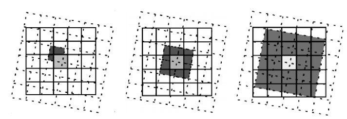
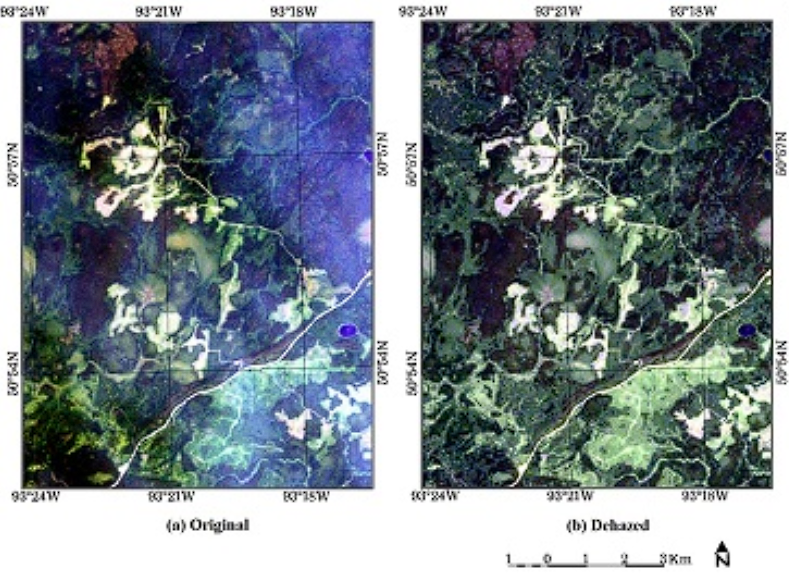
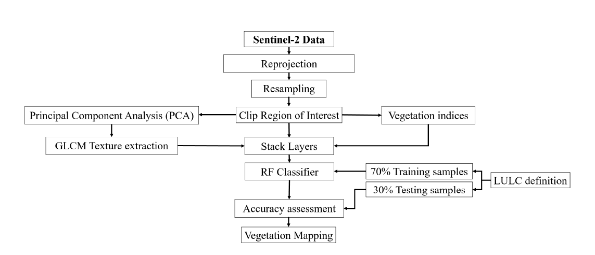

3 Week 3: All about Remote Sensing Data
4 Pre-processing
This week’s content is slightly more technical, covering the different flaws in remote-sensing data and the different ways we can account and correct for them. The flaws and artifacts in the data can come from the technical properties of the sensor, to atmospheric conditions while capturing data across earth. Each flaw is a huge can of worms, with extensive research and modelling happening in the background to ensure that the data that we download publicly is fit to use without distortions or influences from weather, sensor flaws or orthographic projection errors.
In simple terms, the pre-processing types can be arranged into four seperate categories:
| Type of Correction | Image Flaw and Causes | Example |
|---|---|---|
| Geometric Correction | Image distortion introduced from view angle, topography, wind conditions and rotation of the earth. Using data collected from the sensor such as exact orbit, altitude, imaging parameters, and ground control points, images are resampled so that locations and accurate pixel values can be calculated. |  Image credits: Università di Pavia Resampling methods llike nearest neighbour, bilinear and bicubic (illustrated) are a key geometric correction step when reprojecting different geographic referencing systems which are found in many GIS softwares today. |
| Atmospheric Correction (subset of radiometric correction) | Caused by atmospheric scattering of light which can create ‘adjacency effect’. Atmospheric correction is also divided into two methods: absolute and relative.  Image Credits: Sun et. al (2017) |
Absolute atmospheric correction examples:
Relative atmospheric corrections examples:
|
| Orthorectification Correction (subset of geometric correction) | Distortions caused by sensor tilt and topographical relief. Orthorectification ensures that each point appear as if each pixel is captured directly below the sensor. | An example orthorectification correction is cosine correction which accounts for the angle at which sunlight hits the earth, causing variability in brightness. |
| Radiometric Correction | Spectral information captured by satellites are affected by atmospheric scattering, absorption which require correction, turning DNs to spectral radiance values. | The data handbook for Landsat-8 outlines several radiometric corrections based on the sensor property in order to correct for inconsistency for specific spectral bands. These include the OLI solar diffuser, lunar irradiance and underfly acquisitions among many others. |
I also created a small dictionary for key terms learnt this week for quick referencing and look up of definitions.
| Terminology | Definition |
|---|---|
| Digital Number (DN) |
|
| Radiance |
|
| Reflectance |
|
| Analysis Ready Data (ARD) |
|
| Band Ratioing |
|
| Spectral Indices |
|
| High/Low Pass Filter |
|
| Texture |
|
| Pan-sharpen |
|
| Principle Component Analysis |
|
5 Applications
5.1 Motivation?
This week I challenged myself to reading a few more technical papers discussing more about Land Cover and Land-Use (LCLU) applications of remote sensing, with the focus on methodologies used to classify them from Grey-Level Co-occurrence Matrix (GLCM) to machine learning methods such as Random Forest (RF), Support Vector Machine (SVM) in Object Based Image Analysis (OBIA). While it took a long time to understand what the papers were discussing or proposing, I felt that with the help of this week’s content and some googling, I could make sense of what the authors are investigating.
The first paper by Mryka Hall-Beyer (2017) is a particular introductory paper on GLCM - she first gives an overview of what GLCM is, its background on textures and the problems with using GLCM. One key issue with Principle Component Analysis used in GLCM is how it is dependent on the researcher choosing which measures and window size to use; and interpret PCA to decide which component to use for land-use classification. Hall-Beyer wishes to address this issue by developing a guideline for choosing relevant GLCM texture measures across different neighbourhood sizes and land covers. She produces different combinations of textures and window sizes on different land covers, and extract similar patterns seen in these combinations. The author found that even across very different land covers, GLCM Mean texture measure should be used as a first choice for classification, with GLCM Cor being used as an addition if necessary. GLCM Con should be used to characterise edge-like features and GLCM Ent can be added for more detailed studies. However, the author cautioned that these are just general guidelines for choosing GLCM textures and every image is different based on features that one might want to characterize. For example, Murray et al. (2010) found that the use of Mean, Con and Ent generated the most accurate land-use maps specifically for tundra vegetation. The author also raised an important point to always report textures and combination used along with its accuracies rather than just reporting the most successful model. This can help identify evidence-drive patterns and build a library of ‘textures combinations’ which is helpful for all researchers.
The second paper explores the use of GLCM textures in vegetation identification. Mohammadpour et al. (2022) developed a methodology integrating 4 vegetation indices and 12 texture variables into Sentinel 2A spectral bands to classify various vegetation species in complex land classification, with applications in wildfire risk management and biomass monitoring.

I think this process really aptly summarises the content I learnt this week - first we have reprojection/resampling, which is part of geometric corrections and image enhancement. Clipping region of interest is the same process of this week’s practical, for example using terra::crop and terra::mask. The authors used 4 vegetation indices: Normalized Difference Vegetation Index (NDVI), Green Normalized Difference Vegetation Index (GNDVI), Enhanced Vegetation Index (EVI), and Soil Adjusted Vegetation Index (SAVI), which are various band ratios covered in this week’s lectures as well. Texture extraction using GLCM was seen in the practical, although the paper covered the process in more details; including explaining the choice of texture metrics to bring forward to the Random Forest (RF). The model achieved a high Overall Accuracy of 90.9% and texture metrics seem to have increased the classification accuracy.
5.2 Reflections
This week’s content is pretty daunting at first glance, as we covered a lot of technical content behind how pre-processing works (and the math involved!), even though we probably do not need to handle much of the pre-processing ourselves. However, I do agree with Andy that it is still important for us to understand the calibrations and corrections that are occurring behind the scenes so that we understand where our data came from.
The second part of the lecture is very very interesting as image enhancement is a constantly evolving field, with different researchers developing new techniques or combining old ones to map out features that they would like to investigate. While reading the papers that utilises image enhancement and correction techniques, I learnt a lot more on the intricacies and problems behind mapping each feature, for example issues with mapping vegetation and their individual species. I realised that there is no one size fit all solution to image classification/enhancement; it depends on our own study area, climate and subject that we want to capture/map. All these tools and techniques are available to us but choosing the most appropriate ones and justifying these choices are the most important and crucial part of the research.